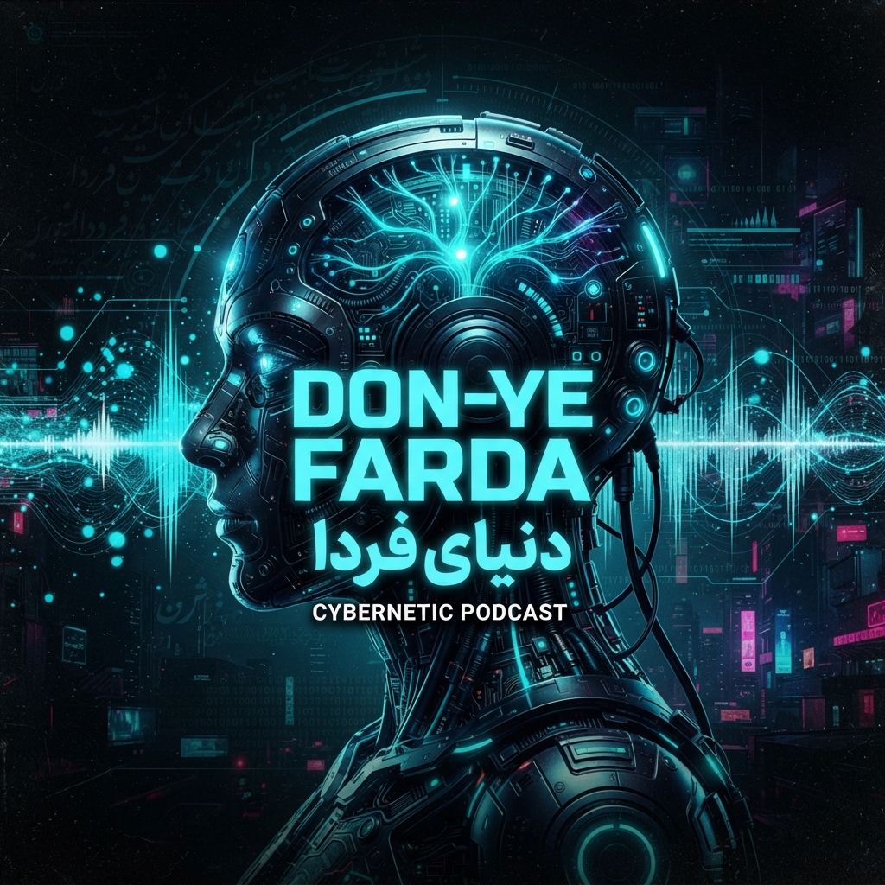

پادکست دنیای فردا
با نگاهی متفاوت و عمیق به فناوریهای پیشرو، انقلاب هوش مصنوعی، مدلهای زبانی بزرگ، محاسبات کوانتومی و جهان فردا که در حال ساختن آن هستیم.
درباره پادکست دنیای فردا
«دنیای فردا» یک رسانه مستقل صوتی برای همگام شدن با مرزهای دانش فنی و فلسفه سایبرنتیک است. هر هفته با دعوت از نخبگان داده، مهندسان سیستمهای خودمختار و فیلسوفان تکنولوژی، تلاش میکنیم مفاهیم پیچیده پیرامون شبیهسازی هوش، اخلاق در الگوریتمها و سرنوشت اقتصادی جوامع فردا را به زبانی شیوا، علمی و در قالب روایتی مستند و جذاب بازگو نماییم.
آینده هوش مصنوعی و مدلهای استدلالگر منطقی
در این اپیزود ویژه، به بررسی نحوه گذار از چتباتهای اولیه به ایجنتهای استنتاجی، خود-اصلاحگر و تحولات معماری ترنسفورمرها در سال ۲۰۲۵ پرداختهایم.
نسل جدید ابزارهای هوش مصنوعی چگونه کار میکنند؟
آیا کسبوکارهای سنتی برای موج اتوماسیون هوشمند آمادهاند؟
آینده اینترنت در عصر وب هوشمند و پروتکلهای توزیعشده

علی رضایی
فارغالتحصیل هوش محاسباتی، نویسنده مقالات آیندهپژوهی و تهیهکننده مجموعه پادکستهای تخصصی نوآوری، با تمرکز بر پیوند فناوری و فرهنگ انسان مدرن.
حمایت از رسانه مستقل
تولید این پادکست بدون هرگونه تبلیغات سازمانی تجاری و با پشتیبانی مستقیم مخاطبان آگاه تامین میشود.